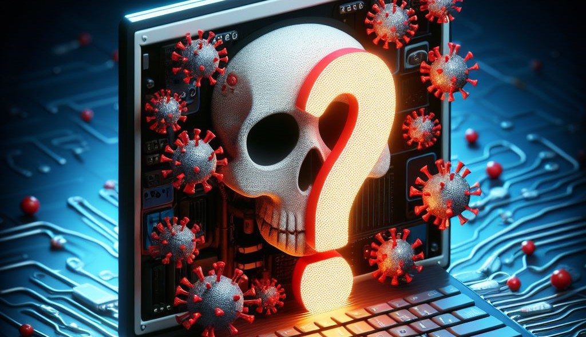

Este tipo de virus se adjunta a archivos
ejecutables. Cuando el usuario ejecuta el programa infectado,
el virus también se ejecuta y puede infectar otros
archivos ejecutables en el sistema.

¿Qué son los virus informáticos?
Los virus informáticos son programas o fragmentos de código maliciosos diseñados para replicarse y propagarse a través de sistemas informáticos, con el objetivo de dañar, alterar o robar información. Estos programas maliciosos pueden afectar diferentes tipos de archivos y se transmiten generalmente cuando se ejecuta el archivo infectado.
Los virus informáticos son programas o fragmentos de código maliciosos diseñados para replicarse y propagarse a través de sistemas informáticos, con el objetivo de dañar, alterar o robar información. Estos programas maliciosos pueden afectar diferentes tipos de archivos y se transmiten generalmente cuando se ejecuta el archivo infectado.
Existen diversos tipos de virus informáticos, cada uno con sus propias características y métodos de propagación:
Los troyanos
se disfrazan de programas legítimos para
engañar a los usuarios y obtener acceso no
autorizado a sistemas. Pueden abrir puertas traseras
en el sistema para permitir
el acceso remoto o robar información confidencial.
Este tipo de malware
cifra los archivos del usuario y exige
un rescate para desbloquearlos. El ransomware
puede propagarse a través de correos electrónicos,
sitios web maliciosos o explotando
vulnerabilidades en el sistema.
Los bots son programas
automatizados que pueden ejecutar tareas específicas.
Cuando se agrupan en una red, forman una botnet, que
puede ser utilizada para realizar ataques
coordinados, como el envío masivo de
correos no deseados (spam) o ataques distribuidos
de denegación de servicio (DDoS).